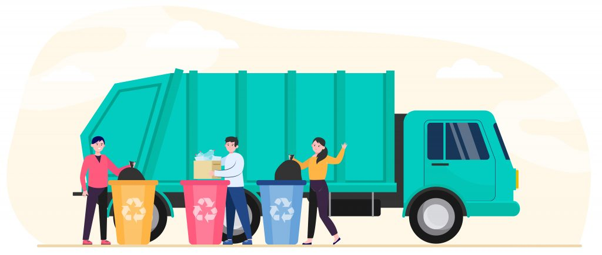

what we need to manage waste management

1. Limit the use of plastic
The news often reports about animals that end up choking on plastic waste or marine life getting stuck in plastic under water. These are signs that we must try and reduce the use of plastic as much as possible in our daily life. Avoid buying plastic water bottles; instead, carry your own water bottle whenever you step out. Do away with plastic straws and drink directly from the glass. Use steel or glass cups instead of plastic ones and carry a cloth bag with you every time you go out shopping. You can even turn your old jeans or pieces of denim into bags.
2. Segregate the waste
Many countries do this and have managed to reduce wastes a great deal. We must emulate the best practices and form healthful habits, since waste management at home is the need of the hour. Segregate garbage into degradable and non-degradable waste. You can also create compost at home with leftover food, fruit and vegetable peels etc. Waste segregation not only makes the process of recycling much easier, but it will also help in maintaining a healthy and clean surrounding.
3. Reduce the use of paper
Yes, we understand that using no paper at all requires a very high level of commitment towards the environment. However, what you can do is use as little paper and paper products in your home as possible. You can use cloth rags instead of paper towels in the kitchen. Maintain soft copies of your journals, rather than using a notebook or a diary. Buy e-books instead of hard copies. Switch to using handkerchiefs and avoiding tissue papers to wipe your hands and face. Prefer metal or eco-friendly bamboo jute plates and cutlery instead of using paper plates when needed. Making such small changes in your choices can lead to a big change and enable house waste management.
4. Say yes to composting
Composting can reduce wastes by turning wet waste into fertilisers for plants. Besides, if you have or are planning to grow your own garden, you will have homemade, eco-friendly, chemical-free fertilisers to nourish your green babies.
5. Plan your meals in advance
A lot of waste is generated from people throwing excess food away because they do not plan their meals in advance. One of the ways to reduce waste is planning; it certainly helps in reducing food wastage. When well-planned, you will prepare only what you need and can consume within a stipulated time, and nothing more. In the long run, you will also save your hard-earned money by doing this, as it will help you in forming good (grocery) buying habits too.
6. Invest in good-quality clothes
When you invest in clothes that last long, you reduce wastes that is generated due to discarded clothes. Good-quality clothes could be a little expensive but they also last longer than their cheap counterparts. If you feel fed up with them after a while, do not throw them away. Pass them on to the less fortunate.
7. Pay your bills online
The house wastes that can accumulate overtime sheerly through bills can be mind-boggling. Choose to pay all your bills online. It is faster and paper-free. Ask your banks and other sources to send you e-statements or e-bills. Another advantage of this method is that you can put it up on your online calendar and make automated payments so you never miss a payment.